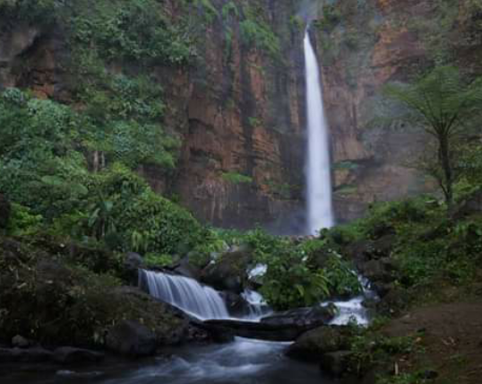

Baca selengkapnya >>>>>
Air Terjun Batang Kapas
Lokasi wisata Air Terjun Batang Kapas ini terletak di Desa Lubuk Bigau, Kecamatan Kampar Kiri Hulu, Kampar. Air terjun batang kapas merupakan air terjun tertinggi yang ada di Sumatera bagian tengah, sekitar 150 meter. Ketika dilihat dari kejauhan, maka air terjun yang satu ini terlihat begitu megah dengan bebatuan putihnya.Baca selengkapnya >>>>>

Air Terjun Batu Dinding
Satu lagi tempat wisata air terjun yang ada di kabupaten Kampar, bisa di pastikan bahwa tidak banya orang yang mengetahui tentang air terjun yang ada di kabupaten kampar. Bagi warga riau pun, tempat wisata seperti air terjun ini, tidak begitu di kenal mereka lebih mengenal tempat wisata seperti air terjun yang berada di daerah sumatra barat ketimbang di riau sendiri. Hal inilah yang membuat tempat wisata yang ada di riau semakin tidak ter explore, bahkan jika di suruh memilih untuk berlibur, masyarakat riau khususnya lebih memilih ke tempat yang sudah di kenal banyak orang, ketimbang harus pergi ke tempat wisata yang ada di provinsi riau.Baca selengkapnya >>>>>